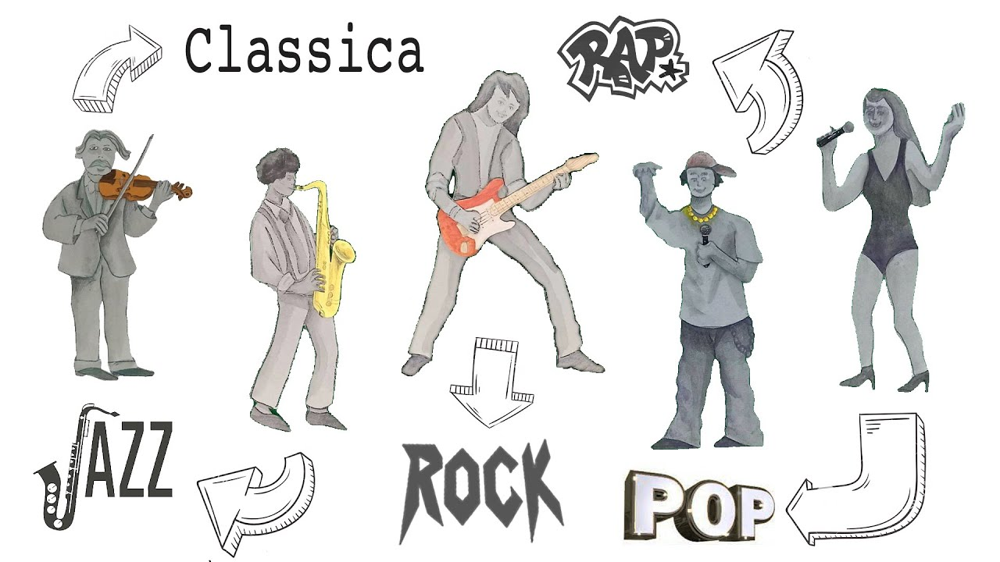

← Torna alla Lezione
La Musica: Un Viaggio attraverso le Epoche
Forma d'arte che si è evoluta negli anni riflettendo i cambiamenti culturali, sociali e tecnologici delle diverse epoche.
Evoluzione Storica
Musica Preistorica e Antica
- Per rituali e cerimonie.
- Tamburi e flauti per accompagnare danze e celebrazioni.
- In egitto e grecia aveva un ruolo importante nelle cerimonie religiose e sociali.
Medioevo
- Musica sacra.
- Canto gregoriano.
- Musica profana grazie a trovatori e menestrelli.
Rinascimento
- Musica più accessibile, con invenzione della stampa musicale.
- Polifonia
- Complessità composizione
Barocco
Classicismo
Romanticismo
XX Secolo e oltre
- Diversi stili e generi.
- Jazz, rock, pop, musica elettronica...
Struttura ed Elementi
- Melodia: Sequenza di suoni che formano una linea musicale riconoscibile.
- Armonia: Combinazione di suoni simultanei che creano accordi e progressioni.
- Ritmo: Pattern temporale che guida il movimento della musica.
- Timbro: Qualità distintiva del suono prodotto da diversi strumenti o voci.
- Dinamica: Variazioni nell'intensità del suono.
Strumenti Musicali
- Cordofoni: Strumenti a corde, come il violino, la chitarra e il pianoforte.
- Aerofoni: Strumenti a fiato, come il flauto, la troma e il clarinetto.
- Membranofoni: Strumenti a percussione con membrane tese, come il tamburo.
- Idiofoni: Strumenti che producono suono tramite la vibrazione del materiale stesso, come il triangolo o le campane.
- Elettrofoni: Strumenti elettronici, come il sintetizzatore.
Generi Musicali
